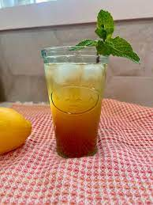

Pina Colada
The classic Pina Colada is a tropical delight that combines 2 oz of white rum, 3 oz of pineapple juice,
and 1 oz of coconut cream. Blended with ice until smooth, it's then poured into a chilled glass and garnished
with a pineapple slice and maraschino cherry. This creamy and refreshing cocktail transports you to a beach
paradise with its perfect balance of pineapple and coconut flavors.
Pineapple Mojito
Elevate the traditional mojito with a Pineapple Mojito. Muddle 6-8 fresh mint leaves and pineapple chunks in a glass,
then add 2 oz of white rum, 1 oz of fresh lime juice, and 1 oz of simple syrup. Fill the glass with ice, top with club soda,
and garnish with a pineapple wedge and mint sprig. This vibrant and zesty cocktail offers a tropical twist to the classic minty favorite.
Pineapple Margarita
Transform the classic margarita into a Pineapple Margarita by combining 2 oz of tequila, 1 oz of triple sec,
1 oz of fresh lime juice, and 2 oz of pineapple juice. Shake well and strain into a salt-rimmed glass for a sweet and tangy experience.
The pineapple adds a tropical note that perfectly complements the margarita's citrusy kick.

Pineapple Ginger Sparkler
For a refreshing and bubbly option, try the Pineapple Ginger Sparkler. Mix 2 oz of vodka,
4 oz of pineapple juice, and 1 oz of ginger syrup. Pour over ice and top with club soda.
Stir gently to combine the flavors, creating a delightful fusion of pineapple sweetness and ginger's
subtle spice.
Pineapple Basil Smash
Introduce an herbal twist with the Pineapple Basil Smash. Muddle fresh basil leaves in a shaker,
then add 2 oz of gin, 1 oz of pineapple juice, and 1 oz of simple syrup. Shake well with ice and
strain into a glass with fresh ice. This cocktail is a harmonious blend of fruity pineapple and
aromatic basil.
Pineapple Rum Punch
The Pineapple Rum Punch brings together 2 oz of dark rum, 3 oz of pineapple juice, 1 oz of orange
juice, and 1/2 oz of grenadine. Stirred over ice and garnished with an orange slice and cherry,
this vibrant punch offers a delightful mix of tropical flavors with a hint of citrus brightness.

Pineapple Mint Julep
Infuse a classic with the Pineapple Mint Julep. Combine 2 oz of bourbon, 1 oz of pineapple juice,
and 1/2 oz of mint-infused simple syrup. Serve over crushed ice and garnish with fresh mint leaves.
The result is a refreshing and aromatic twist on the traditional mint julep with a burst of pineapple sweetness.
Pineapple Coconut Sparkler:
Embrace the tropical essence of the Pineapple Coconut Sparkler. Mix 2 oz of coconut rum,
3 oz of pineapple juice, and 2 oz of coconut water. Pour over ice and top with club soda.
Stir gently to create a fizzy, coconut-infused pineapple delight that is perfect for a sunny day.